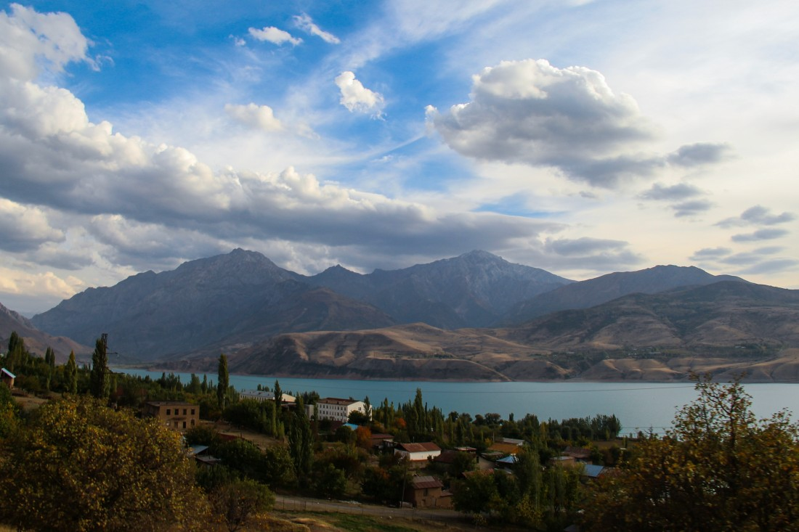
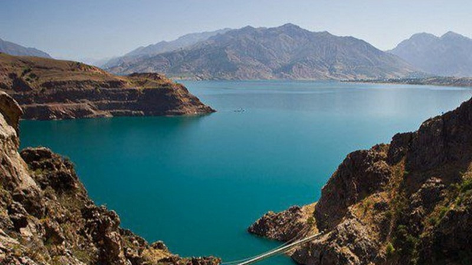

Tashkent Region (Uzbek: Toshkent viloyati, Тошкент вилояти, Russian: Ташкентская область) is a viloyat (region) of Uzbekistan, located in the northeastern part of the country, between the Syr Darya River and the Tien Shan Mountains. It borders with Kyrgyzstan, Tajikistan, Sirdaryo Region and Namangan Region, as well as the city of Tashkent which is a region in its own right, forming en enclave entirely encircled by the territory of Tashkent Region. It covers an area of 15,250 km².[2] The population is estimated 2,975,900 (2021).[1] Its capital is the city Nurafshon.[3] Other cities are Angren, Olmaliq, Ohangaron, Bekabad, Chirchiq, Gʻazalkent, Keles, Parkent, Yangiabad, and Yangiyoʻl.
Climate
The climate is a typically continental climate with mild wet winters and hot dry summers.
Chatkal National Park, with mountains and forests, is located within Tashkent Region.
Economy
Natural resources include copper, brown coal, molybdenum, zinc, gold, silver, rare earths, natural gas, petroleum, sulfur, table salt, limestone, and granite.
Tashkent Region is the most economically developed in the country. Industry includes energy production, mining, metallurgy, fertilizers, chemicals, electronics, textiles, cotton purification, food processing and footwear.
Tashkent Region also has a highly developed agricultural industry, based primarily on irrigation to which the Tuyabuguz Reservoir is a major contributor. The main crops are cotton and hemp, but cereals, melons and gourds, fruit and vegetables and citrus fruits are increasing. Livestock is also important.
The region has a well-developed transportation infrastructure, with over 360 km of railways and 3771 km of surfaced roads. Tashkent has a large international airport, which is the main air gateway to the country.
Back to Uzbekistan Page